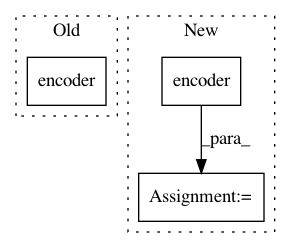

a7a5cdc598afd6afa3d0e9d355360bebc4947c29,snli/model.py,SNLIClassifier,forward,#SNLIClassifier#Any#,59
Before Change
def forward(self, batch):
premise = self.encoder(self.embed(batch.premise))
hypothesis = self.encoder(self.embed(batch.hypothesis))
answer = self.out(torch.cat([premise, hypothesis], 1))
return answer
After Change
prem_embed = self.relu(self.projection(prem_embed))
hypo_embed = self.relu(self.projection(hypo_embed))
premise = self.encoder(prem_embed)
hypothesis = self.encoder(hypo_embed)
scores = self.out(torch.cat([premise, hypothesis], 1))
return scores
In pattern: SUPERPATTERN
Frequency: 3
Non-data size: 3
Instances
Project Name: OpenNMT/OpenNMT-py
Commit Name: a7a5cdc598afd6afa3d0e9d355360bebc4947c29
Time: 2017-01-24
Author: bryan.mccann.is@gmail.com
File Name: snli/model.py
Class Name: SNLIClassifier
Method Name: forward
Project Name: asyml/texar
Commit Name: c8523b2dc735a1b82ca6170e6ca349defe9f77fc
Time: 2017-11-17
Author: shore@pku.edu.cn
File Name: examples/transformer.py
Class Name:
Method Name:
Project Name: uber/ludwig
Commit Name: a0a14ed743f511932db8234b2521a9eebfecde31
Time: 2020-07-09
Author: w4nderlust@gmail.com
File Name: tests/ludwig/models/modules/test_encoder.py
Class Name:
Method Name: encoder_test